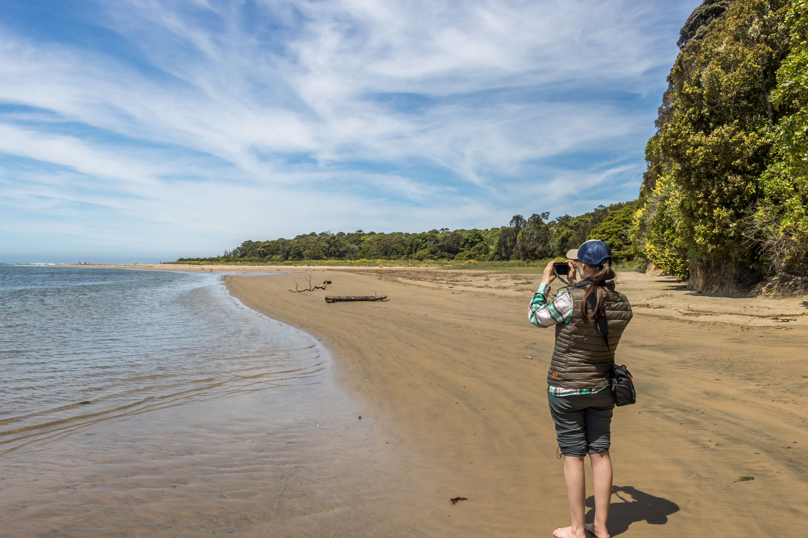
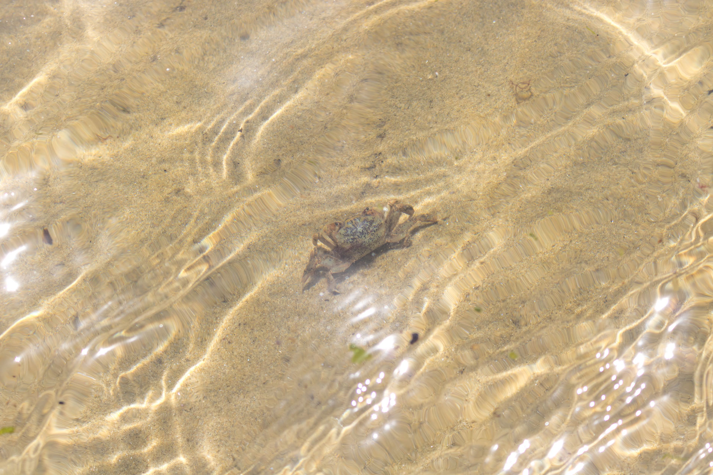

Excursion à Papatowai
1-2 décembre 2018
Bienvenue sur le tout premier article de notre blog. Ce blog vous permettra de suivre nos aventures mémorables à travers la Nouvelle-Zélande tout au long de notre séjour dans ce coin du monde éloigné mais magnifique. Les photos qui agrémentent le texte vous ferons rêver des paysages féeriques qui abondent à chaque coin de rue (et derrière chaque arbre) et convaincront peut-être quelques-un(e)s d'entre vous de venir nous visiter.
Ce court séjour de deux jours à Papatowai constitue notre première véritable excursion en dehors de notre ville de domicile, Dunedin. Le village de Papatowai est situé à environ deux heures en voiture au sud de Dunedin (voir la carte en bas de la page), à l'embouchure de la rivière Tahakopa qui se jette dans l'océan Pacifique. Dans la langue des Maoris (peuple autochtone de la Nouvelle-Zélande), Papa signifie «terre» et towai correspond à un arbre de la région; Papatowai veut donc dire la Terre du Towai (l'écorce du Towai est utilisée pour traiter des infections de la peau, ainsi que pour le tannage et la teinture). Le village abrite une trentaine de personnes à l'année longue, mais beaucoup de résidents n'y habitent que durant les mois chauds de l'été. Sachez aussi que des os d'une espèce d'oiseaux non volants maintenant disparue, les moas, ont été trouvés dans les forêts environnantes (et la légende stipule que le dernier survivant parcourt encore les forêts les plus denses et sombres...).

En route vers Papatowai, nous passons un petit village qui accueille ses visiteurs avec une enseigne sur laquelle est écrite les mots: No hospital, no doctor, one cemetary. Charmant. À notre arrivée, nous trouvons le terrain de camping. Il s'agit de petites aires gazonnées et bien isolées par de nombreux gros arbres. Libre à nous de choisir le site que nous préférons. Après avoir rapidement installé la tente, nous nous dirigeons vers la plage avec notre lunch, ce qui représente une grosse marche de deux minutes. La plage donne sur la rivière, et la marée est très haute. Des forêts denses nous entourent. Au loin, nous pouvons apercevoir les vagues de l'océan Pacifique. Après avoir mangé nos sandwichs au jambon, confortablement installés dans nos chaises pliantes de camping, nous partons explorer la côte. Nous marchons à moitié dans la rivière, car l'eau monte jusqu'au rebord de la forêt impénétrable. De petits crabes parcourent les parties peu profondes de la rivière et nous devons éviter leur pinces acérées (RIP le petit crabe qui a trouvé sa fin sous le soulier d'Alex). Désolé également au crabe qui dormait paisiblement dans un coquillage et que l'on a si brusquement réveillé.

Lorsque nous atteignons la côte de l'océan, d'impressionnantes falaises nous sont révélées au loin à travers une mince couche de brouillard maritime. La forêt sur la côte ressemble à la jungle amazonienne tellement elle est dense et variée. Le chant d'une dizaine d'oiseaux différents retentie à travers les arbres et s'ajoutent à l'ambiance paradisiaque.
Ici, tous les arbres semblent avoir poussés dans une direction sous l'influence des vents de la mer. Ça donne de drôles de paysages. De petits affleurements de basalte sont parsemés sur les plages, avec d'impressionnantes textures de coussins qui attestent de l'emplacement de lave en milieu sous-marin. Auparavant (probablement quelques millions d'années au moins), cette région était donc complètement submergée.

Nous passons l'après-midi à lire et à jouer à la Nintendo Switch (elle est portable!). Plus tard, lorsque nous redescendons vers la rivière, quelle n'est pas notre surprise de la retrouver presqu'à sec! La marée est assez importante ici apparemment. De nombreux oiseaux, dont des albatros, des mouettes et des canards, profitent de la marée basse pour se nourrir d'animaux marins. La photo ci-dessous montre une espèce d'oiseau a long bec (Huîtrier des Chatham) qui déterre les mollusques profondément cachés dans le sable et brise leur coquille avant de les avaler. Sur le chemin du retour, les yeux de lynx de Caro aperçoivent un phoque à l'orée des bois. Il se dirigeait apparemment vers le couvert des arbres, peut-être pour y passer la nuit?
Bien que le soleil ait fait sentir sa présence tout au long de cette chaude journée de printemps, la température baisse agréablement à la tombée de la nuit. Notre souper de hot-dogs cuits sur un réchaud au gaz (nous ne pouvons pas faire de feu de camp malheureusement) et de légumes crus est excellent bien que simple. Nous passons une nuit très confortable dans notre petite tente, entassés comme des sardines. Le lendemain matin, nous mangeons quelques muffins pour déjeuner et nous retournons pour une dernière petite promenade sur la plage avant de ranger l'équipement dans la voiture et de revenir à la civilisation.
Quelques photos supplémentaires de notre excursion (cliquez sur les photos pour les agrandir):


Voici la localisation de Papatowai sur une carte de la Nouvelle-Zélande: